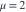
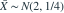
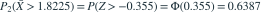

独立同分布于 ，样本量 16。检验 对 ，当 时拒绝原假设。给定 ，则在
独立同分布于 ，样本量 16。检验 对 ，当 时拒绝原假设。给定 ，则在 
时该检验的功效约为多少？- A0.0500
- B0.6387
- C0.3613
- D0.9500
我已思考，展开答案与解析
正确答案：B
- 在 时，

，标准差为 0.5。 - 功效为

。
易错提醒功效是在备择参数下拒绝原假设的概率，其补数是该点的第二类错误概率。
原模拟卷 A · 模拟卷 A 第 37 题
原创
独立同分布于 ，样本量 16。检验 对 ，当 时拒绝原假设。给定 ，则在 
时该检验的功效约为多少？
，标准差为 0.5。
。原模拟卷 A · 模拟卷 A 第 37 题
原创